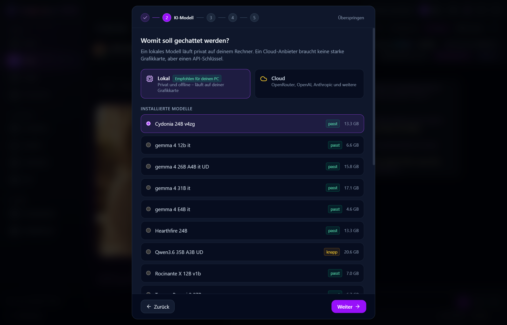

Richte ein KI-Modell ein, lerne deine erste Figur kennen und finde Hilfe, wenn du nicht weiterkommst.
01 / INSTALLATION
Wähle die Datei für dein System
Öffne das neueste Release, klappe Assets auf und wähle die passende Installationsdatei.
Windows 10 oder 11
Lade …_x64-setup.exe herunter und starte die Datei.
Linux
Lade das AppImage für x86-64 herunter und markiere es als ausführbar. Auf Debian oder Ubuntu kannst du auch das Paket …_amd64.deb mit sudo apt install ./dateiname.deb installieren. Ersetze dateiname.deb durch den Namen deiner Datei.
macOS mit Apple-Chip
Öffne …_aarch64.dmg und ziehe OtakuSoul in „Programme“. Falls macOS die nicht notarisierte App blockiert, findest du Hilfe in den macOS-Hinweisen der README.
02 / ERSTER START
Wähle, wo die KI läuft
Im Einrichtungsassistenten kannst du Deutsch, Englisch, Russisch oder Japanisch für die App-Oberfläche wählen. Wähle danach ein Design und entscheide dich für lokale KI oder die Cloud. Das Modell kannst du später auf der Startseite wechseln.
Lokale KI
Deine Chats werden auf deinem Gerät verarbeitet. Wähle die Empfehlung des Assistenten für deinen Rechner und lade ein passendes Modell herunter. Sprach- und Bildmodelle kannst du später ergänzen.
Modelle können mehrere Gigabyte groß sein. Wenn der Speicher knapp ist, wähle ein kleineres Modell oder aktiviere weitere Funktionen nacheinander.
Cloud-KI
Wähle im Assistenten einen Anbieter, verbinde dein Konto oder füge deinen API-Schlüssel ein. Teste dann die Verbindung. Das geht auch auf Laptops ohne eigene Grafikkarte.
Der Anbieter verarbeitet deine Anfragen und legt Preise und Nutzungslimits fest.

Der Assistent empfiehlt ein Modell, das zu deiner Hardware passt.
03 / SPIELEN
Starte einen Chat oder eine Geschichte
Lerne eine Figur kennen. Öffne Charaktere und wähle eine Karte, die für den Einstieg empfohlen wird. Starte den Chat, schreib eine Nachricht oder nutze die Glühbirne für Ideen.
Lade weitere Figuren ein. Starte in der Gesprächsübersicht einen Gruppenchat oder lade über die Gruppensteuerung Gäste ein. Sprich eine Figur beim Namen an, damit sie antwortet.
Starte eine Geschichte. Öffne die Bühne, wähle ein Abenteuer in der Galerie und starte die Geschichte. Entscheide, was du sagst, tust oder denkst. Du kannst auch einem Begleiter etwas zuflüstern oder der Spielleitung eine Anweisung geben.
Probiere es aus. Über das Menü einer Nachricht kannst du sie als Erinnerung für spätere Chats speichern.
Inhalte aus dem Hub hinzufügen
Öffne den Hub in OtakuSoul und stöbere nach Figuren, Geschichten und Szenen, Avataren oder Weltbüchern.
Wähle einen Inhalt aus und lade ihn herunter oder importiere ihn. Über Alles installieren kannst du eine Geschichte zusammen mit den zugehörigen Inhalten laden.
Neue Geschichten findest du auf der Bühne und heruntergeladene Modelle unter Bibliothek → Avatare. Verweist ein Avatar auf die Seite des Erstellers, lade ihn dort herunter und importiere ihn anschließend in der Avatar-Bibliothek.
Öffne die Spracheinstellungen und höre dir die verfügbaren Stimmen an. Wähle eine Stimme und richte die passende Sprachausgabe ein.
Sprich ins Mikrofon
Richte die Spracherkennung ein und nutze dann die Mikrofontaste im Chat. Erlaube bei Bedarf den Mikrofonzugriff in deinem Betriebssystem.
Erstelle ein Szenenbild
Richte in den Bildeinstellungen ein Modell oder einen Dienst ein. Wähle im Menü einer Antwort die Option, diesen Moment als Bild darzustellen. Über die Bildkarte kannst du das Ergebnis als Chathintergrund verwenden.
Wähle einen Avatar
Nutze ein Porträt oder weise einer Figur einen Avatar zu. In der Anleitung zu 3D-Avataren findest du die unterstützten Formate und die Einrichtung.
05 / PROBLEME BEHEBEN
Wenn etwas nicht funktioniert
Die KI antwortet nicht
Prüfe auf der Startseite, welches Modell ausgewählt ist. Bei Cloud-KI teste die Verbindung und prüfe dein Konto oder deinen Schlüssel. Bei lokaler KI prüfe, ob der Download abgeschlossen ist. Falls die App eine Lösung zum Fehler anbietet, probiere sie aus.
Das lokale Modell ist langsam oder zu groß
Probiere ein kleineres Chatmodell. Wenn der Chat allein funktioniert, füge Sprach- und Bildmodelle einzeln hinzu und prüfe, was gleichzeitig läuft. Du kannst für den Chat auch zur Cloud wechseln.
Mikrofon oder Sprachausgabe funktionieren nicht
Prüfe Mikrofon und Ausgabegerät in den Systemeinstellungen. Teste eine Stimme in der App und prüfe, ob die Einrichtung der Sprachausgabe oder Spracherkennung abgeschlossen ist.
Ich kann kein Bild generieren
Prüfe in den Bildeinstellungen, welches Modell oder welcher Anbieter ausgewählt ist. Warte, bis das lokale Modell vollständig geladen ist, oder prüfe die Verbindung zum Cloud-Dienst.
Ich möchte eine vorhandene Figur oder einen Chat importieren
Importiere SillyTavern-Charakterkarten als PNG oder JSON und Lorebooks separat. Vorhandene Gespräche kannst du in der Gesprächsübersicht als SillyTavern-JSONL-Datei importieren.
06 / WEITERE HILFE
Hier findest du weitere Hilfe
Über das Fragezeichen in der Titelleiste erreichst du die ersten Schritte und das Glossar. Die ausführliche Einsteigeranleitung erklärt Antwortoptionen, Gruppenchats und die Bühne.
Falls das Problem weiterhin besteht, nenne dein Betriebssystem, die App-Version, das Modell oder den Anbieter und die Schritte, mit denen sich der Fehler nachstellen lässt. Entferne API-Schlüssel und private Chats aus Screenshots und Protokollen.